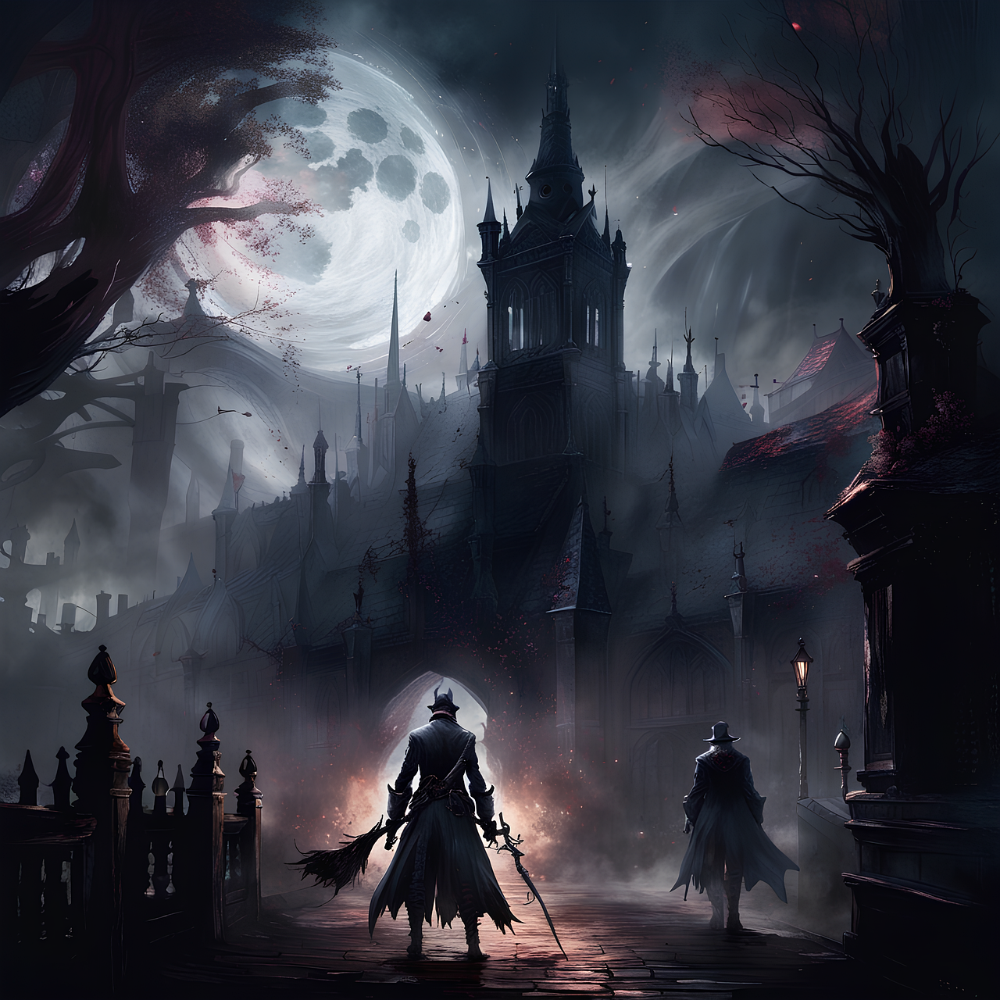
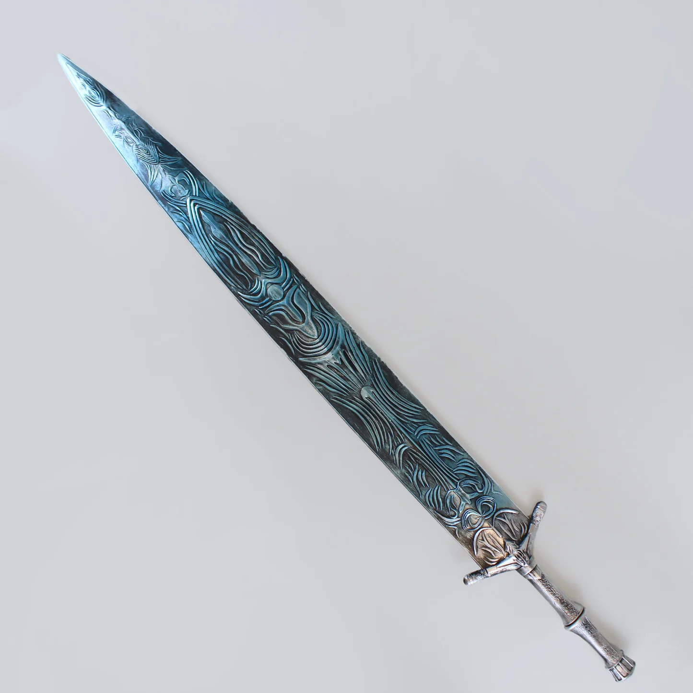

FEATURED| best weapon and armor
Darkmoon greatsword
The Holy Moonlight Sword is synonymous with Ludwig, the Holy Blade, but few have ever set eyes on the great blade, and whatever guidance it has to offer, it seems to be of a very private, elusive sort
Darkmoon greatsword
The Holy Moonlight Sword is synonymous with Ludwig, the Holy Blade, but few have ever set eyes on the great blade, and whatever guidance it has to offer, it seems to be of a very private, elusive sort